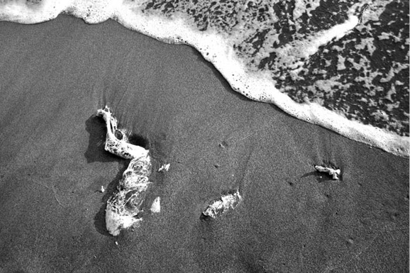

Asil’in azli
Belinden tutarak, Asil’in omuzlarından çekip aldığı çocuğu, sağ kolunun altına sıkıştıran adam, bağırmaya devam ediyordu.
“İşte bu! Asil Yaşayan! Televizyondaki herif! Şimdi de çocuğumu kaçırıyor!”
Adamın sol yumruğunun içinde, Asil’in, siyahtan toprak rengine geçmiş gömleğinin yakası duruyordu. Asil’se çocuğa bakıyordu. Saatlerdir omuzlarında taşıdığı çocuk, artık bir adamın kolunun altında, insan derisinden üretilmiş bir çanta gibi duruyordu. Babası, Yahya’yı belinden kavramış, başı ve bacakları yere doğru eğilmişti. Adam her bağırdığında, başı da, bacakları da sallanıyordu.
Ama Asil, daha fazla ayakta duramadı. Omuzlarında, düşürmekten korktuğu bir çocuk yoktu artık. Dizlerinin üzerine çöktü. Gözleri, hâlâ yüzünü göremediği çocuktaydı. Yakasını bırakmayan babasıyla birlikte sarsılan çocukta. Bu yüzden, ilk yumruğun kim tarafından atıldığını anlayamadı. Sol şakağındaki basınç, çenesini kafatasından ayıracak kadar şiddetliydi. Ama Asil düşmedi. Sadece başı, iki omzunun arasında gidip geldi. Yahya’nın babası, ağırlığını sol ayağına verip sağ bacağını kaldırdı. Ayağını bastığı yerde, Asil vardı. Sağ ayağını saran, siyah ayakkabısının topuğu, Asil’in göğsüne bir çekiç gibi indi. Dizlerinin üzerinde olduğu için, ancak bir karış geriye düşen gövdesi, görünmez bir virajı alıp sağ kolunun üzerine yıkıldı. Asil devrildi.
Ayakkabılar gördü. Rengârenk. İnsanlar gördü. Başka insanların bacaklarının arasından. Saatler gördü. Yüzükler. Kapatmadı gözlerini. İzliyordu. Her şeyi. Herkesi. Sesler duydu. Kornalar, küfürler, ağlayan Yahya ve küfürlerin devamı. Alınları kırıştıran güneşin ışığını, insanlar kesti. Vurmak için eğilen, doğrulup çekilen insanların gölgeleri. Yattığı yere, güneş girmiyordu. Asil, saatler sonra ilk kez, bir serinlik hissetti. Yüklendiği her darbede, biraz daha ıslanıyordu. Ter mi, kan mı, tükürenlerin salyası mı? Belli değildi. Karışmışlardı. İnfazcılar gibi. Onlar da karışmıştı. Aynı kaldırımda yürüseler, birbirlerinin midelerini bulandırırlardı. Ama artık, tek bir beden inşa etmiş, şeytanın kuyruğunu yiyorlardı. Toplumsal cephe. Ulusal cephe. İnsanlık, Asil’e karşı. Dünyanın kurtuluş savaşı.
Dizlerini karnına çeken Asil, başını da avuçlarının arasına soktu. Bu haliyle, on kez küçültülse, herhangi bir kadının rahmine sığardı. Ama doğmuştu bir kez. Dönüşü yoktu.
Derisi gerilip bollaşıyor, dişleri azalıp çoğalıyordu. Saçları kopuyor, ayak parmakları kırılıp dökülüyordu. Gömleği yaralarına gömülüyor, pantolonu sıcak asfalta yapışıyordu. Bilekleri çatlıyor, burnundan kemik akıyordu. Omuriliği bir fermuar gibi açılıyor, sırtı yarılıyordu. Dizkapakları sökülüyor, bacakları çürüyordu. Dirsekleri kazınıyor, parmak izleri siliniyordu. Dili kesiliyor, damağı düşüyordu. Ses telleri kopuyor, boğazı yanıyordu. Gözkapakları yırtılıyor, Asil görüyordu. Kulakları deliniyor, Asil duyuyordu. Sirenleri, tekbir getirenleri, alkışlayanları, yankesicilerin tuttukları nefesleri, Yahya’nın hıçkırıklarını, seyyar satıcıları, belediye hoparlöründen düşen anonsları, kadın çığlıklarını, atacak sloganı kalmayanların okumaya başladıkları İstiklal Marşı’nı ve akşam ezanını duyuyordu.
Sonra hepsi durdu. Birden. Üzerlerine, gökyüzünden tonlarca lav yağmış gibi. Sesler de, bedenler de, taş oldu. Çünkü Asil’in zihni, son kez konuştu.
“Azledildin. Her şey bitti. Bundan sonra, düşünmeyecek, bilmeyecek ve yaratmayacaksın.”
Sonra yeniden başladı. Hepsi birden. Taşlar çatladı. İçlerinden, sesler ve bedenler çıktı. Aldığı son nefesi vermeden önce, Asil’in açık gözleri, karşılaşmalarına eş bir mucizeyle, Yahya’yı gördü. Çocuğun sol gözü mavi, sağ gözü yeşildi. Asil güldü. Asil öldü.
